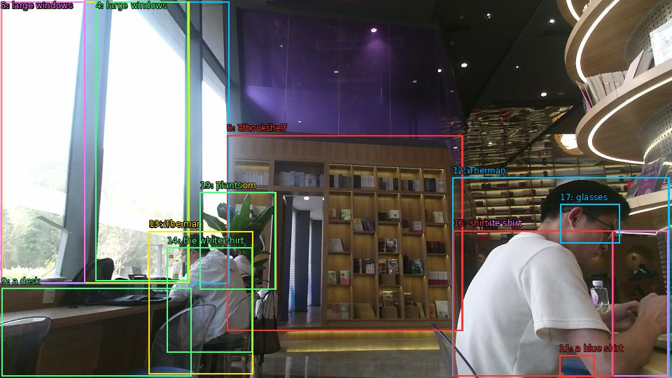

The image shows the interior of a modern library or bookstore. The walls are made of wood and there are large windows on the left side of the image, allowing natural light to enter the space. On the right side, there is a bookshelf filled with books of different sizes and colors. In the center of the room, there are two men sitting at a desk, one wearing a white shirt and the other wearing a blue shirt. The man in the white shirt is working on a laptop and appears to be focused on his work. He is wearing glasses and has a serious expression on his face. The room is decorated with plants and other decorative items.

Original · Caption raw · Grounding raw · Koordinate
Številke so lokalni ID regije. Dolge slikovne oznake so skrajšane; spodaj so celotne fraze. Napovedane regije se lahko prekrivajo ali opisujejo skupine.
| ID | Celotna fraza | bbox xyxy |
|---|---|---|
| 1 | The walls | [324.0, 193.0500030517578, 661.9199829101562, 472.2300109863281] |
| 2 | large windows | [2.3999998569488525, 2.430000066757202, 327.8399963378906, 405.8100280761719] |
| 3 | large windows | [2.3999998569488525, 2.430000066757202, 270.239990234375, 404.7300109863281] |
| 4 | large windows | [136.8000030517578, 2.9700000286102295, 268.32000732421875, 401.4900207519531] |
| 5 | large windows | [1.4399999380111694, 2.430000066757202, 121.43999481201172, 404.19000244140625] |
| 6 | a bookshelf | [324.0, 193.0500030517578, 660.9599609375, 472.2300109863281] |
| 7 | two men | [646.5599975585938, 253.53001403808594, 956.6399536132812, 537.030029296875] |
| 8 | two men | [212.63999938964844, 330.75, 361.44000244140625, 534.3300170898438] |
| 9 | a desk | [2.3999998569488525, 411.7500305175781, 273.1199951171875, 537.5700073242188] |
| 10 | a white shirt | [647.5199584960938, 329.1300048828125, 875.0399780273438, 537.5700073242188] |
| 11 | a blue shirt | [799.2000122070312, 507.8700256347656, 849.1199951171875, 538.1100463867188] |
| 12 | The man | [646.5599975585938, 253.53001403808594, 955.6799926757812, 537.030029296875] |
| 13 | The man | [212.63999938964844, 330.21002197265625, 361.44000244140625, 534.3300170898438] |
| 14 | the white shirt | [238.55999755859375, 353.9700012207031, 360.47998046875, 503.5500183105469] |
| 15 | shirt | [647.5199584960938, 329.1300048828125, 954.719970703125, 537.5700073242188] |
| 16 | shirt | [647.5199584960938, 329.1300048828125, 876.0, 537.5700073242188] |
| 17 | glasses | [800.1599731445312, 291.8700256347656, 885.5999755859375, 347.4900207519531] |
| 18 | The room | [285.6000061035156, 274.5899963378906, 394.0799865722656, 413.9100036621094] |
| 19 | plants | [285.6000061035156, 274.5899963378906, 393.1199951171875, 413.9100036621094] |